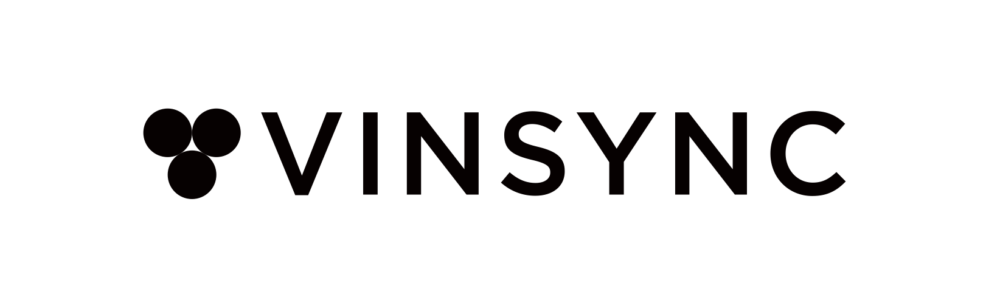

좋은 와인은 사라지지 않고, 기록되고 이어져야 합니다.
Vinsync는 와인을 다루는 비즈니스가 더 정확하고 간결하게 와인을 기록하고 관리할 수 있도록 돕는 소프트웨어 회사입니다.
우리는 와인 리스트, 메뉴판, 가격, 빈티지, 재고 정보가 흩어져 관리되는 문제에 주목합니다.
와인 한 병의 정보가 매장 운영, 고객 경험, 재고 관리까지 자연스럽게 이어지는 구조를 만들고자 합니다.
Sommelist는 Vinsync의 첫 번째 제품입니다.
와인 정보를 한 번 등록하면 웹 메뉴판과 재고 관리에 함께 반영되어, 매장은 더 적은 반복 업무로 더 정확한 와인 리스트를 운영할 수 있습니다.
와인바, 레스토랑, 호텔, 와인샵을 위한 더 간결한 와인 운영 시스템을 만들고 있습니다.